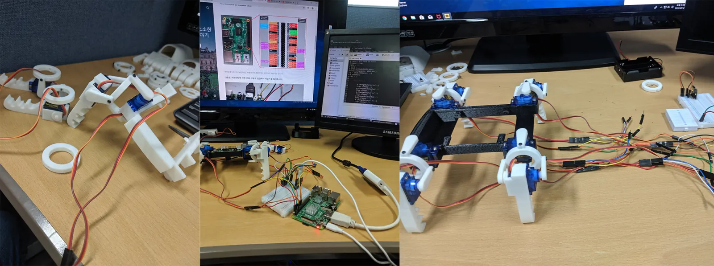
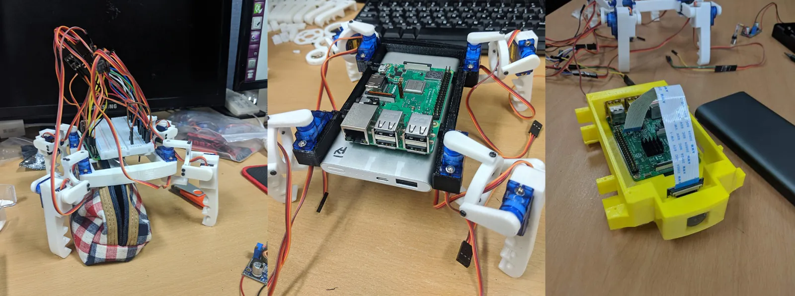

Wisconsin Yonsei Bot
Overview
This was the first quadruped robot I built from scratch to study quaduped gait efficiency and autonomous navigation. Using Raspberry Pi, and SG 90 servos, I was able to implement various gait algorithms.


Design and build
Design & Assembly: Design and mechanism variations were tested using Creo 5.0 and Virtual Robot Experimentation Platform (V-REP).
Wiring & Programming: Robot's joint movement and gait algorithms were implemented using Raspberry Pi, ROS.
Prototype I: Camera module was added to prototype I to implement an autonomous, obstacle avoiding navigation system.
First steps
"First small step for WYBot, one giant leap for my robotics career..."
Sit and stand
sit(), stand()
Demonstration
Final Demonstration
Similar work

Cheap Opensource Robot Dog (CORD)
Open-source quadruped robot platform designed for educational purposes and affordable robotics research.

Laika
Laika is a quadruped robot like SPOT that is being built from scratch as part of Roboclub.

Torsobot
Self-balancing rimless wheel robot investigating fundamental properties of human walk cycle with enhanced stability using PID control.